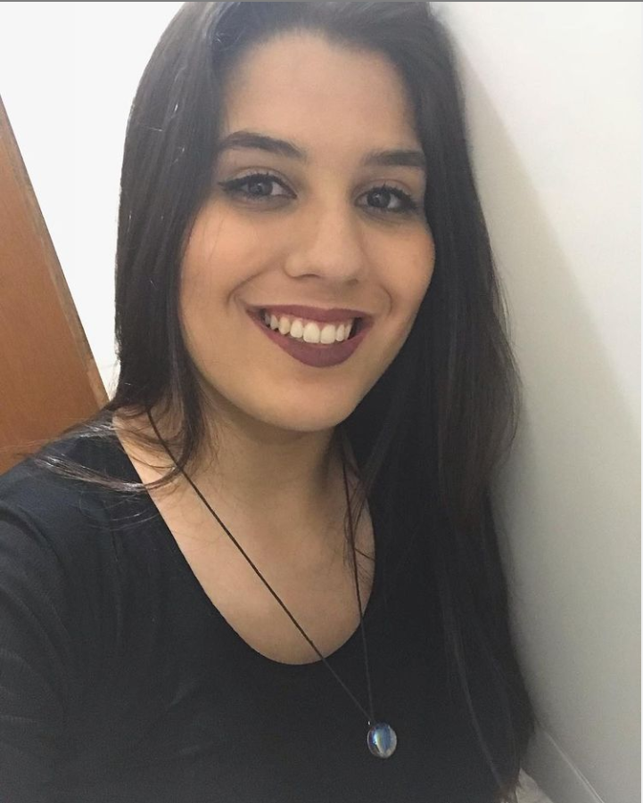

Oi, sou a Mariana :)
Tenho 20 anos, moro em São Paulo, e curso Análise e Desenvolvimento de Sistemas na FECAF à distância. O objetivo nesse portfólio que desenvolvi é exibir e explicar um pouco mais sobre minha experiência profissional na área da tecnologia.
A princípio, possuo três anos de experiência profissional com a área de Recursos Humanos, mas esse não é meu foco atualmente, afinal, essa experiência vem do primeiro emprego como aprendiz.
Na busca pela primeira experiência profissional na área de Tecnologia da Informação, estagiei com infraestrutura, fazendo a instalação e configuração de VOIP, dispositivos IP e câmeras Intelbras. As solicitações atendidas diariamente demandavam assuntos como Aplicações Microsoft, Aplicações Google, configuração e instalação de dispositivos IP.
O foco continua nos estudos de desenvolvimento (principalmente java e python) e caso queira saber mais sobre meu histórico profissional, você pode baixar meu currículo no link abaixo:
Download CV